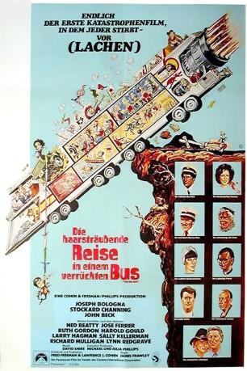

#10988 Die Haarsträubende Reise in einem verrückten Bus
Alternativ: The Big Bus (Englischer Titel)
 
 IMDB-Wertung: 5.6 / 10
IMDB-Wertung: 5.6 / 10  Metascore: 0
Metascore: 0 
Ein atomgetriebener Bus ist nicht alle Tage unterwegs, und die Jungfernfahrt des verrücktesten Vehikels aller Zeiten gestaltet sich entsprechend chaotisch. Auf der Fahrt von New York nach Denver drohen mehrfach wahnsinnige Sabotageakte, und der Fahrer hat alle Hände voll zu tun, um das Leben seiner nicht weniger verrückten Passagiere zu retten. Unter ihnen ein Priester, eine attraktive Schauspielerin sowie der Erfinder des Gefährts, das mit 75 Tonnen Gewicht auf 32 Rädern seinem Ziel entgegendonnert.
Jahr: 1976
Dauer: 85 Minuten
FSK: 12
Land: USA Studio: ParamountTonspuren:
Untertitel:
Auflösung: 1080p (1920x824) Größe: 3829 MB
Genre: Action, Komödie
Regisseur: James Frawley
Drehbuch: Fred Freeman, Lawrence J. Cohen
Soundtrack: David Shire
Darsteller:
Datei: X:\3-Trilogie(N-Z)\Unglaubliche Reise in einem verrückten\Haarsträubende Reise in einem verrückten Bus, Die (1976, FSK12, 1920x824).mkv seit 16.04.2019
Festplatte: HD Collection-3(N-Z)-6(A-Z)
 Alle Filme aus Gruppe '3-Trilogie(N-Z)\Unglaubliche Reise in einem verrückten'
Alle Filme aus Gruppe '3-Trilogie(N-Z)\Unglaubliche Reise in einem verrückten'